Topic 1: History and Concepts of Programming Languages¶
1. History of Programming Languages¶
1.1. From Calculating Machines to Programmable Computers¶
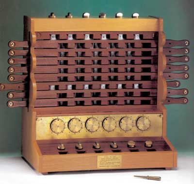 |
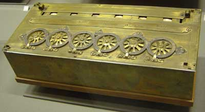 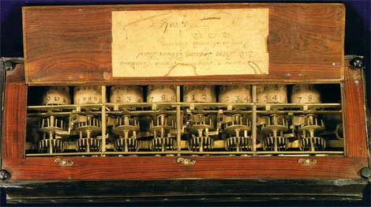 |
| Schickard's machine (1623) | Pascal's calculator (1650) |
From the first mechanical calculators designed in the 17th century to the 1940s, many mechanical, analog, and electronic machines and computers were invented in an attempt to speed up calculations and improve their precision.
The culmination of all mechanical approaches to computation was the famous Analytical Engine designed by Charles Babbage in 1840. The fundamental difference from all previous artifacts was that it was a programmable calculating machine using punched cards. Babbage was inspired by the Jacquard loom, where fabric patterns could be configured using punched cards. The machine was designed to work in base 10, and its calculations could include conditional jumps and loops.
Babbage worked for more than 30 years trying to build the machine. It was enormously complex for its time and required a great deal of funding. He died in 1871 having been able to build only one part of it.
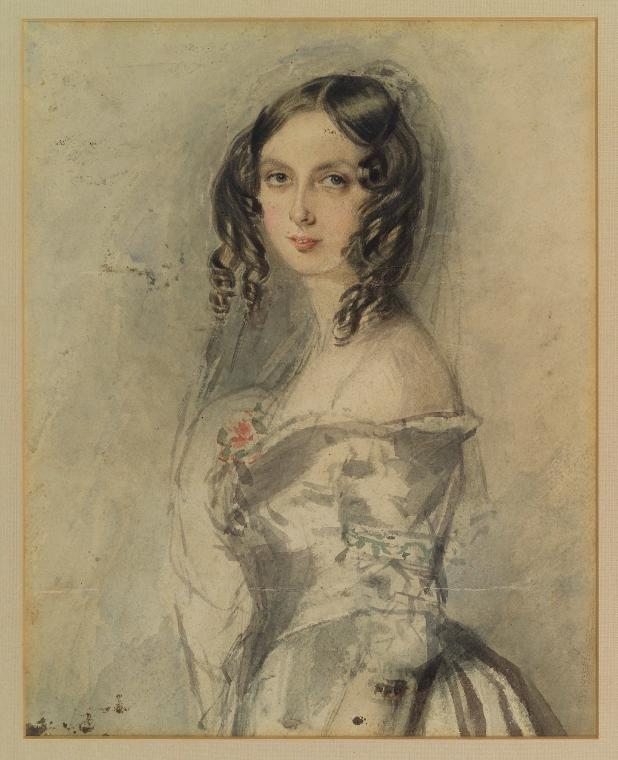
The mathematician Ada Lovelace played a fundamental role in publicizing the machine and its programming system, and she was the first person to understand its possibilities beyond the calculation of formulas.
Unusually for that time, Ada was educated in science and mathematics. In the early 1840s, when she was twenty-five, she became familiar with Babbage's work and collaborated with him, spending several years studying the design and operation of the Analytical Engine.
In 1843 she published the paper "Sketch of the analytical engine invented by Charles Babbage", in which she describes the Analytical Engine, adds her own reflections on the scope of the invention, and builds a complete example, with tables and diagrams, of how to make the machine produce the sequence of Bernoulli numbers. These tables and diagrams can be considered the first computer program.
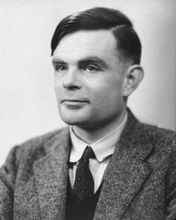
Before any real computer existed, in 1936, the English mathematician Alan Turing formalized the abstract idea of a computer using a very simple processing model: an abstract machine with a scanner that reads and writes 0s and 1s on an infinite tape (memory), moving and writing according to a table defined in the machine (program). With this abstract machine, the Turing machine, Turing explores the idea of what is computable and what is not. Are there non-computable problems for which it is impossible to invent an algorithm that solves them? Turing proves that there are, and with his work he establishes the limits of computation.
In the same paper, Turing defines the concept of a universal machine, which is able to read any program from the tape and simulate its behavior on another part of the tape. This idea had a profound impact on the development of computers because it showed that it is possible to write programs that take other programs as data. This opens the door to the idea of programs stored in memory, since they are just another kind of data, and to the creation of compilers and interpreters.
In the 1940s there was an explosion of electronic and electromechanical computing machines. It was a remarkable decade in which increasingly faster and more robust technologies were developed, and enormous advances were made in the speed and precision of calculations.

In the middle of that decade, in 1945, John Von Neumann, who was working on the construction of the ENIAC, introduced a fundamental advance. He proposed his famous architecture, in which the two key ideas of general-purpose computers were proposed for the first time: a program stored in memory and a set of processing instructions that includes indirect addressing.
And in 1948, three years later, the first general-purpose digital electronic computer using this architecture was built at the University of Manchester. It was called Baby. It was designed by Max Newmann using technology provided by the engineers F.C. Williams and Tom Kilburn. Williams had invented an electronic memory device, the Williams tube, capable of replacing the slow mercury delay lines used until then.
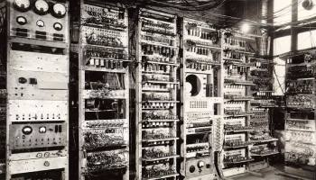
The Manchester machine was the first computer with a complete instruction set, capable of jumps, conditionals, and indirect addressing. The first execution of a program took place on June 21, 1948. That year Alan Turing joined the University of Manchester as director of the Computing Laboratory. Three years later, with an expanded design also influenced by Turing, a much larger version of the machine became the first commercially available computer, the Ferranti Mark I. The first one was installed at the University of Manchester in February 1951, one month before the UNIVAC I was delivered to the United States Census Bureau. Ten more machines were sold to Great Britain, Canada, the Netherlands, and Italy.
The first complex Artificial Intelligence program, a checkers player written by Christopher Strachey, ran in the summer of 1952 on the Ferranti Mark I at the Manchester Computing Laboratory. Strachey wrote the program encouraged by Turing and using the Ferranti programming manual that Turing had just written. Turing also participated in the development of other AI programs, such as a chess player based on heuristics.
1.2. The First Programming Languages¶
The first electronic computers were programmed directly using the processor's instruction set, in machine code or hexadecimal code.
The first language at a slightly higher level than machine code was assembly language. The first programs that processed programming languages began to appear, although they were very simple programs, since there is an almost direct relationship between assembly notation and the hexadecimal code produced by the assembler.
At the end of the 1940s, people began trying to solve with the first computers the first mathematical problems other than numerical operations: coding and decoding, combinatorial problems such as map coloring, or sorting problems.
One of von Neumann's first algorithms sorts a set of numbers. Von Neumann describes it in a letter dated 1945. It uses the EDSAC instruction set, even though the machine had not yet been built. The program was studied by Donald Knuth in the article Von Neumann's first Computer Program, where he documents that there was a bug in the first instructions. It is the first written bug known in history. If Von Neumann had been able to run the program on the EDSAC, he would have noticed the error and it would have been the first debugging of a program.
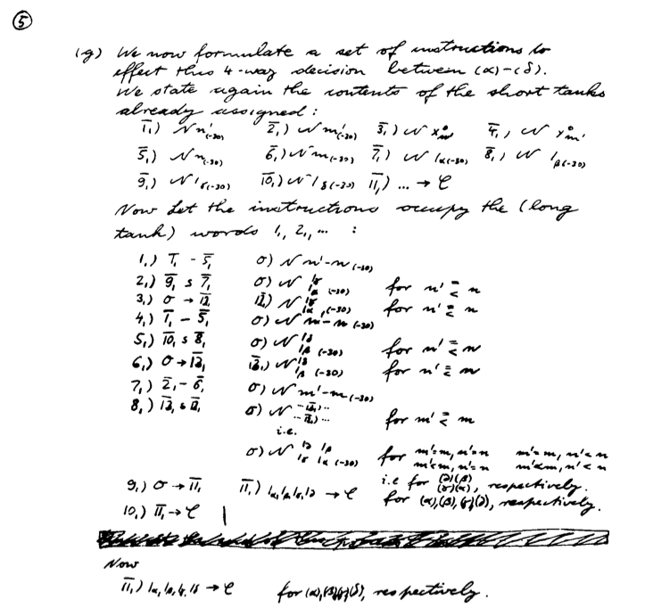
Von Neumann's first program
(Donald Knuth, "Von Neumann's first Computer Program", Journal of the ACM Computing Surveys (CSUR) Surveys, Volume 2 Issue 4, Dec. 1970, Pages 247-260)
1.3. The Birth of Commercial Computers¶
UNIVAC
The UNIVAC was the first commercial computer (1951). With this computer, the figure of the programmer appeared for the first time: manuals, training courses, job offers, and so on.

UNIVAC
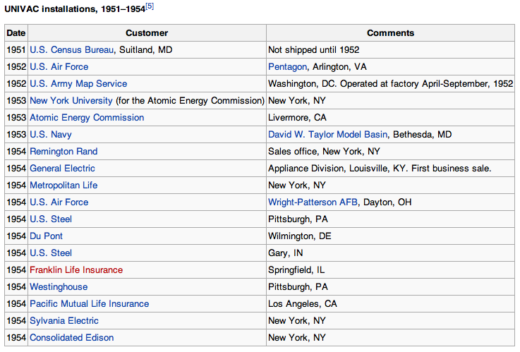
UNIVAC commercial facilities
IBM 704
The IBM 704 was the other major commercial computer of the 1950s.
It was much more widely used than the UNIVAC: government centers, universities.
The first high-level programming languages were developed for this computer.

IBM 704 photo
1.3.1. Programming the First Computers¶
The UNIVAC I was an interesting machine to program, with its mercury delay-line storage and its tendency to fail. Programs were entered into the computer by typing them onto magnetic tapes, an important innovation at that time.
Working with the IBM 704 at New York University was a radically different experience from the UNIVAC I. It was built to run scientific applications, and its main innovation was magnetic-core memory, replacing the Williams tube memory of the IBM 701. It also had a floating-point arithmetic unit. The machine had the equivalent of 128 KB of main memory, 32 KB of secondary memory, and magnetic tapes that could store 5 MB of data. It operated at 0.04 MIPS and cost 3 million dollars in 1957.
George Sadowsky, My Second Computer was a UNIVAC I
1.4. The First High-Level Languages¶
The first high-level languages were developed at the end of the 1950s:
- FORTRAN in 1956
- Lisp in 1958
Both languages proposed two very different approaches from the beginning:
- FORTRAN
- First commercial language, IBM team led by John W. Backus
- Imperative language: state, control structures, program counter, memory cells
- Compiled language
- Lisp
- Language designed in a research department, an MIT team led by John McCarthy
- Functional language: functions, recursion, lists, symbols
- Interpreted language
1.4.1. FORTRAN¶
Developed by IBM to program the IBM 704. Some facts:
- Its name comes from FORmula TRANslating system.
- The first FORTRAN manual was printed in October 1956 for the IBM 704.
- The first compiler was marketed in April 1956.
Quote from John Backus (Wikipedia on FORTRAN):
Much of my work has come from being lazy. I did not like writing programs, and when I was working on the IBM 701, writing programs to compute missile trajectories, I began work on a programming system to make it easier to write programs.
John Backus
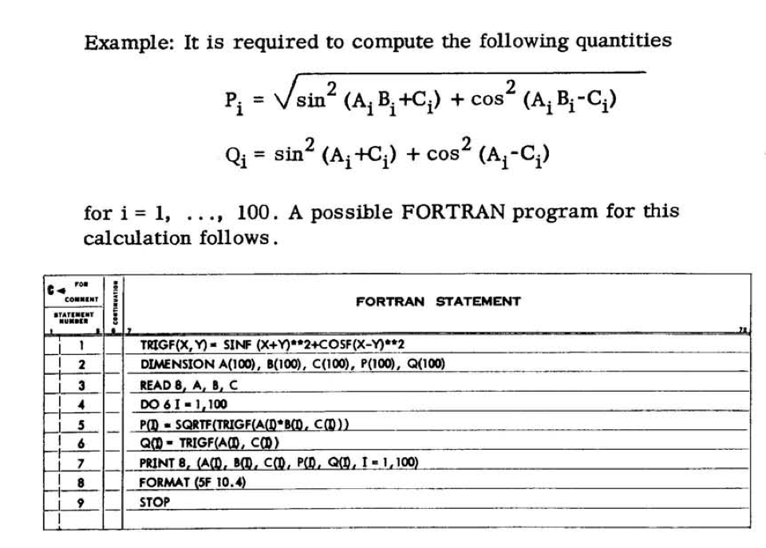
FORTRAN example
Taken from the IBM 704 FORTRAN manual
1.4.2. Lisp¶
The other high-level language developed at that time was Lisp. It was developed in the late 1950s at MIT by John McCarthy.
Although historically the language name was often written in capital letters (LISP), the use of only the first letter in uppercase (Lisp) later became popular. This form is more faithful to the origin of the language name. Lisp is not an acronym, but a contraction of the expression List Processing. List processing is one of the main features of Lisp.
McCarthy explains the early history of Lisp in a 1979 article:
[...] In the summer of 1956 during the Dartmouth Summer Research Project on Artificial Intelligence, the first organized study of Artificial Intelligence, I had the idea of developing an algebraic language for list processing. I wanted to use it for the development of work in artificial intelligence on the IBM 704. [...] John McCarthy, History of LISP
John McCarthy
One of the first published Lisp manuals is the LISP manual from 1960 for the IBM 704, written by Phyllis A. Fox of the MIT research group led by McCarthy.
An example of Lisp code:
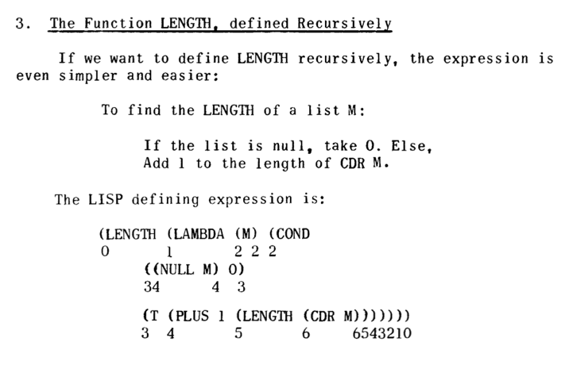
LISP example
Taken from "The Programming Language LISP", MIT Press, 1964
1.5. The Explosion of Programming Languages¶
From 1954 to the present, more than 2,500 languages have been documented (see The Language List). Between 1952 and 1972, around 200 languages appeared. About ten were truly significant and influenced the development of later languages.
1.5.1. Genealogy of Programming Languages¶
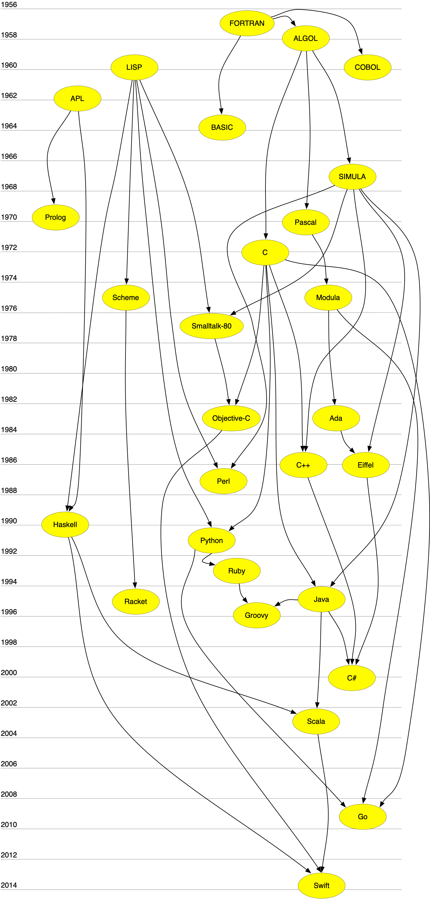
Genealogy of programming languages
Some notes on the genealogy:
-
APL is a declarative algebraic language for specifying functions and logical circuits. Its declarative nature influenced languages such as Prolog or Haskell.
-
Lisp is not only a functional language; it is also the first interpreted language, with many runtime features and little static checking. In those aspects, it influenced non-functional dynamic languages such as Python or Smalltalk. Languages such as Smalltalk or Objective-C also inherit from Lisp some functional features, such as the possibility of using a block of code as a primitive object created at runtime that can be assigned or passed as a parameter. This is what is called a closure in the functional programming paradigm.
-
SIMULA is the first language to define concepts such as class or object. It is the origin of statically and strongly typed object-oriented programming. Languages such as C++, Eiffel, or Java take this idea. In contrast to this tendency, there is another view of object-oriented programming in languages such as Smalltalk or Objective-C, where dynamic aspects such as message passing or class modification at runtime are emphasized more strongly.
1.5.2. Some Important Languages and Their Creation Date¶
| 1950-1960 | 1970 | 1980 | 1990 | 2000 |
|---|---|---|---|---|
| 1957 FORTRAN | 1970 Pascal | 1980 Smalltalk-80 | 1990 Haskell | 2000 C# |
| 1958 ALGOL | 1972 Prolog | 1983 Objective-C | 1991 Python | 2003 Scala |
| 1960 Lisp | 1972 C | 1983 Ada | 1993 Ruby | 2003 Groovy |
| 1960 COBOL | 1975 Scheme | 1986 C++ | 1995 Java | 2009 Go |
| 1962 APL | 1975 Modula | 1986 Eiffel | 1995 Racket | 2014 Swift |
| 1964 BASIC | 1987 Perl | |||
| 1967 SIMULA |
1.5.3. The Creators of Programming Languages¶
If we look at the history of programming languages, we can classify their creators into three broad categories:
- Researchers working in companies (Backus/IBM-FORTRAN, Gosling/Sun-Java)
- Researchers at universities and computer science departments (McCarthy/MIT-Lisp, Wirth/ETH-Pascal, Odersky/ETH-Scala)
- Open source developers who distribute their work to the community (Wall/Perl, Matsumoto/Ruby)
1.6. Programming Languages Today¶
The TIOBE index is an indicator of the popularity of programming languages. The index is updated once a month. The scores are based on undisclosed statistics that include the number of engineers worldwide, courses, and applications developed. Results obtained from the most widely used search engines are also used.
The TIOBE index does not try to measure the number of lines written in programming languages, but their popularity and importance in the community.
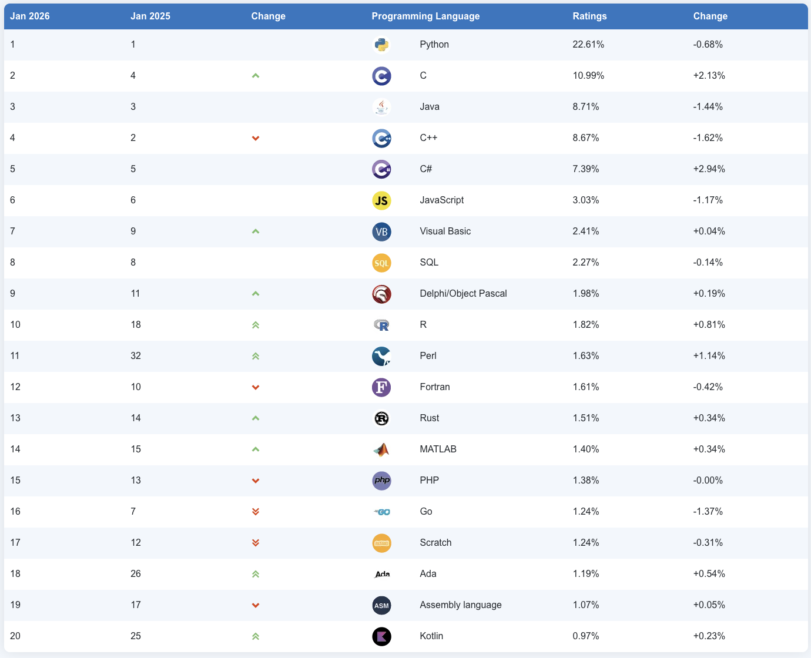
TIOBE list
It is also very interesting to check the evolution of the 10 most popular languages over the last 10 years.
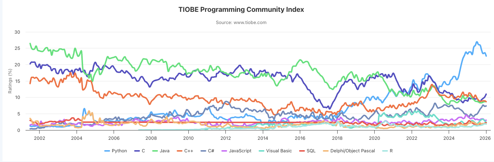
TIOBE evolution
1.6.1. Evolution Does Not Stop¶
It is interesting to see that it is becoming easier and easier to develop new programming languages. Language processing techniques and tools have become increasingly popular and accessible to more people. Languages are no longer created only in departments with a large number of researchers, but also in open source communities made up of interested and motivated volunteers.
Examples of new languages and their creators:
Ruby
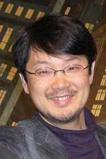
Yukihiro Matsumoto
- Ruby (Wikipedia), a programming language conceived in 1993 by the Japanese developer Yukihiro Matsumoto.
- Interpreted, multi-paradigm, and very expressive language currently used both for developing web applications and video games.
- Active project, with new versions appearing every year.
Scala
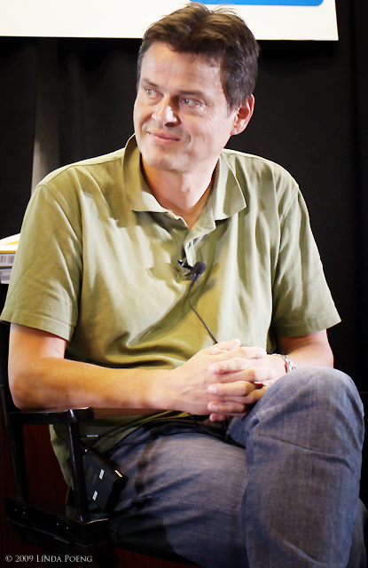
Martin Odersky
- Scala (Wikipedia), designed in 2003 by the German professor Martin Odersky.
- Response to the problems of traditional imperative languages for handling concurrency.
- It is implemented on top of Java and runs on the Java Virtual Machine.
Go
Ken Thompson
- Go (Wikipedia), Google's new programming language launched in 2009.
- Developed, among others, by Ken Thompson, one of the fathers of UNIX.
- A mix of C and Python that tries to achieve a systems programming language that is very efficient, expressive, and also multi-paradigm.
Swift
Chris Lattner
- Swift (Wikipedia), Apple's new programming language launched in 2014.
- Open source project where its evolution and future roadmap can be observed.
- Developed, among others, by Chris Lattner, author of the LLVM Compiler Infrastructure, a set of compiler, debugger, optimizer, and related tools for C, C++, and Objective-C code.
- Modern, multi-paradigm language (object-oriented and functional programming), strongly typed and compiled.
2. Elements of Programming Languages¶
2.1. Definition from the Encyclopedia of Computer Science¶
A programming language is a set of characters, rules for combining them, and rules for specifying their effects when executed by a computer, with the following four characteristics:
- It requires no knowledge of machine code from the user.
- It is machine independent.
- It is translated into machine language.
- It uses a notation that is closer to the specific problem being solved than to machine code.
2.2. Definition by Abelson and Sussman¶
We are about to study the idea of a computational process. Computational processes are abstract beings that inhabit computers. As they evolve, processes manipulate other abstract things called data. The evolution of a process is directed by a pattern of rules called a program. [...]
And another fundamental idea:
A powerful programming language is more than just a means for instructing a computer to perform tasks. The language also serves as a framework within which we organize our ideas about processes. Thus, when we describe a language, we should pay particular attention to the means that the language provides for combining simple ideas to form more complex ideas.
2.3. Characteristics of a Programming Language¶
- It defines a process that runs on a computer.
- It is high level, close to the problems to be solved (abstraction).
- It allows new abstractions to be built and adapted to the programming domain.
2.4. Elements of a Programming Language¶
For Abelson and Sussman, all programming languages make it possible to combine simple ideas into more complex ideas through the following three mechanisms:
- Primitive expressions, which represent the simplest entities in the language.
- Means of combination, with which compound elements are built from simpler elements.
- Means of abstraction, with which compound elements are named and manipulated as units.
2.5. Syntax and Semantics¶
Syntax: set of rules that define which text expressions are correct.
For example, in C all statements must end with ;.
Semantics: set of rules that defines what the result of executing a program on the computer will be.
2.6. Languages Are for People¶
Programming languages must be precise; they must be translatable without ambiguity into machine language so that they can be executed by computers. But they must also be used (read, commented, tested, and so on) by people.
Programming is a collaborative activity and must be based on communication.
2.7. Importance of Learning Programming Language Techniques¶
It is important to know how a programming language works "inside" and to understand its characteristics in comparison with others.
- It improves the use of the programming language.
- It increases the vocabulary of programming elements.
- It allows a better choice of programming language.
- It improves the ability to develop effective and efficient programs.
- It makes it easier to learn a new programming language.
- It makes it easier to design new programming languages.
3. Abstraction¶
A fundamental mission of programming languages is to provide tools for building abstractions. For example, we are building an abstraction when we give a name to a language entity (a variable, a function, a class, and so on).
Choosing a good name for the elements we build in our programs is essential to achieve readable and reusable code.
3.1. Modeling as a Fundamental Activity¶
- To write a program that provides services, it is essential to model the domain it will work on.
- It is necessary to define different abstractions, both APIs and data, that allow us to deal with its elements and communicate correctly with the users who will use the program.
- The abstractions we build rely on each other and make a complex problem understandable and communicable.
- Example: modeling the operation of a library contains abstractions such as "books", "loan", "reservation", or "available books", which represent domain concepts that must be implemented in our solution.
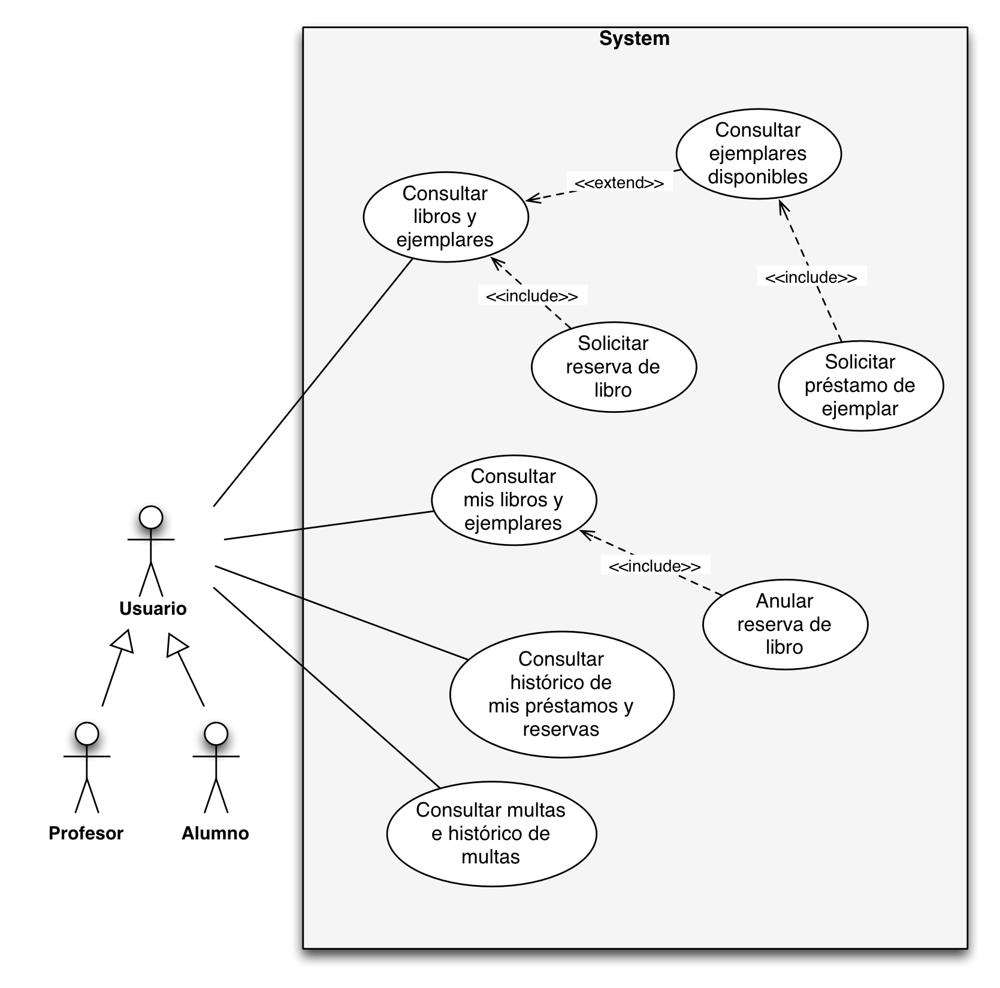
Library use cases
3.2. Computational Abstractions¶
There are abstractions specific to computer science that are used in many domains. For example, data abstractions such as:
- Lists
- Trees
- Graphs
- Hash tables
There are also abstractions that allow us to deal with external devices and computers:
- File
- Graphic raster
- TCP/IP protocol
3.3. Building Abstractions¶
One of the main jobs of a computer scientist is to build abstractions that save time and effort when dealing with the complexity of the real world.
Quote from Joel Spolsky in his blog Joel on Software:
TCP is what computer scientists call an abstraction: a simplification of something much more complicated that is going on under the covers. It turns out that a lot of computer programming consists of building abstractions. What is a string library? It is a way to pretend that computers can manipulate strings just as easily as they can manipulate numbers. What is a file system? It is a way to pretend that a hard disk is not actually a set of rotating magnetic platters that can store bits at certain positions, but instead a hierarchical system of folders-within-folders that contains individual files.
3.4. Different Aspects of Programming Languages¶
Programming is a complex discipline that has to take into account multiple aspects of programming languages and APIs:
-
Programs as runtime processes that execute on a computer. We need to understand what happens when an object is created, how long it remains in memory, what the scope of a variable is, and so on.
Tools: debuggers, performance analyzers.
-
Programs as static declarations. A program must be considered from the point of view of declaring new types, new methods, generic types, inheritance between classes, and so on.
Tools: programming environments with code completion and syntax error detection.
-
Programs as communication and social activity. We must take into account that a program will be used by other people, read, extended, maintained, and modified. Programs will always be modified.
Tools: version control systems (Git, Mercurial, GitHub, Bitbucket), issue management systems (Jira), tests that prevent regression errors, ...
4. Programming Paradigms¶
4.1. What Is a Programming Paradigm?¶
A paradigm defines a set of characteristics, patterns, and programming styles based on some fundamental idea. For example, the functional paradigm is based on the idea that a computation can be specified as a set of functions that transform input values into output values.
It is useful to see a paradigm as a programming style that can be used in different programming languages and expressed with different syntaxes. For example, code using logic programming can be written in Prolog, which would be the most natural choice, but also in Java, using some specific API.
Normally, all languages have characteristics from more than one paradigm. For practical reasons, the most popular languages are not strictly or purely limited to a single programming paradigm.
For example, Prolog is mostly a logical and declarative language, but it has imperative operators such as the cut. Even so, it is normal to assign a language to the paradigm in which it is easiest or most natural to write code using its constructs.
There are languages that reinforce and promote the expression of code in more than one programming paradigm. And they do so not by necessity or accident, but with the explicit intention of merging more than one paradigm into a single way of programming. These languages are called multi-paradigm languages.
For example, Scala is a multi-paradigm language in which Martin Odersky, its creator, mixes object-oriented programming features with functional programming.
Prolog or Lisp, although they have non-logical or non-functional features, cannot be considered multi-paradigm because they were not created with the idea of integrating varied paradigms into a coherent form of expression.
The most important paradigms are:
- Functional paradigm
- Logic paradigm
- Imperative or procedural paradigm
- Object-oriented paradigm
4.2. Functional Paradigm¶
Summary of the main characteristics:
- Computation is performed by evaluating expressions.
- Definition of functions.
- Functions as primitive data.
- Values without side effects; there are no references to memory cells in which mutable state is stored.
- Declarative programming, in pure functional programming.
Languages: Lisp, Scheme, Haskell, Scala, Clojure.
Code example (Lisp):
(define (factorial x)
(if (= x 0)
1
(* x (factorial (- x 1)))))
>(factorial 8)
40320
>(factorial 30)
265252859812191058636308480000000
4.3. Logic Paradigm¶
Characteristics:
- Definition of rules.
- Unification as a computation element.
- Declarative programming.
Languages: Prolog, Mercury, Oz.
Code example (Prolog):
padrede('juan', 'maria'). % juan es padre de maria
padrede('pablo', 'juan'). % pablo es padre de juan
padrede('pablo', 'marcela').
padrede('carlos', 'debora').
hijode(A,B) :- padrede(B,A).
abuelode(A,B) :- padrede(A,C), padrede(C,B).
hermanode(A,B) :- padrede(C,A) , padrede(C,B), A \== B.
familiarde(A,B) :- padrede(A,B).
familiarde(A,B) :- hijode(A,B).
familiarde(A,B) :- hermanode(A,B).
?- hermanode('juan', 'marcela').
yes
?- hermanode('carlos', 'juan').
no
?- abuelode('pablo', 'maria').
yes
?- abuelode('maria', 'pablo').
no
4.4. Imperative Paradigm¶
Programming languages that follow the imperative paradigm are characterized by having an implicit state that is modified through language instructions or commands. As a result, these languages have a notion of command sequencing to allow precise and deterministic control of state.
Characteristics:
- Definition of procedures.
- Definition of data types.
- Compile-time type checking.
- Change of variable state.
- Execution steps of a process.
Example (Pascal):
type
tDimension = 1..100;
eMatriz(f,c: tDimension) = array [1..f,1..c] of real;
tRango = record
f,c: tDimension value 1;
end;
tpMatriz = ^eMatriz;
procedure EscribirMatriz(var m: tpMatriz);
var filas,col : integer;
begin
for filas := 1 to m^.f do begin
for col := 1 to m^.c do
write(m^[filas,col]:7:2);
writeln(resultado);
writeln(resultado)
end;
end;
4.5. Object-Oriented Paradigm¶
Characteristics:
- Definition of classes and inheritance.
- Objects as abstractions of data and procedures.
- Polymorphism and runtime type checking.
Example (Java):
public class Bicicleta {
public int marcha;
public int velocidad;
public Bicicleta(int velocidadInicial, int marchaInicial) {
marcha = marchaInicial;
velocidad = velocidadInicial;
}
public void setMarcha(int nuevoValor) {
marcha = nuevoValor;
}
public void frenar(int decremento) {
velocidad -= decremento;
}
public void acelerar(int incremento) {
velocidad += incremento;
}
}
public class MountainBike extends Bicicleta {
public int alturaSillin;
public MountainBike(int alturaInicial,
int velocidadInicial,
int marchaInicial) {
super(velocidadInicial, marchaInicial);
alturaSillin = alturaInicial;
}
public void setAltura(int nuevoValor) {
alturaSillin = nuevoValor;
}
}
public class Excursion {
public static void main(String[] args) {
MountainBike miBicicleta = new MoutainBike(10,10,3);
miBicicleta.acelerar(10);
miBicicleta.setMarcha(4);
miBicicleta.frenar(10);
}
}
5. Compilers and Interpreters¶
At the lowest level of abstraction, the execution of a program on a computer consists of executing a set of machine-code instructions for the processor. For example, the following figure shows an example of an assembly-language program for an old processor, the Z80, an 8-bit processor from the legendary ZX Spectrum, one of the first personal computers in Europe:
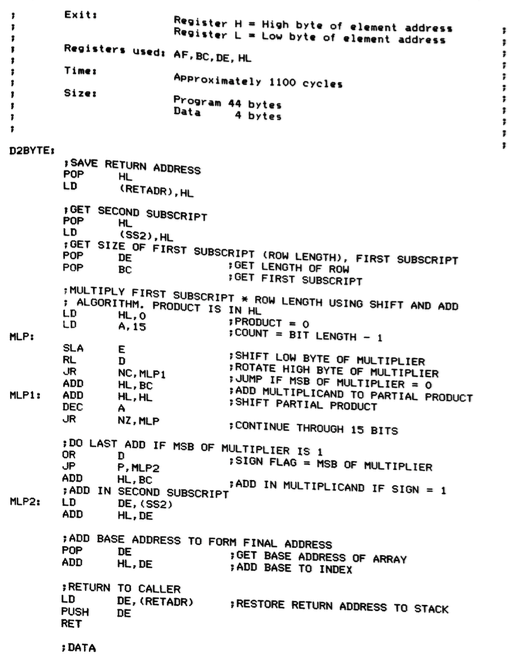
Z80 assembly language
Depending on the type of programming language in which the program is written, the machine code being executed will be:
- the result of compiling the original program, in the case of a compiled language.
- the code of a program, the interpreter, that interprets the original program, in the case of an interpreted language.
5.1. Compilation¶
The following figure, taken like the others in this section from Programming Language Pragmatics, shows the generation and execution process of a compiled program.
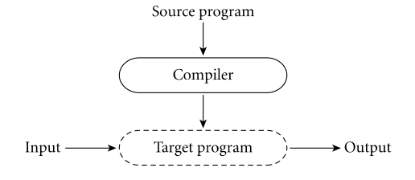
Compilation
The compilation process of a program consists of translating the original source code in the high-level language into the specific machine code of the processor on which the program will run. The resulting machine code only runs on the processor for which it has been generated. For example, a C program compiled for an Intel processor cannot run on an ARM processor, such as Apple's Ax.
- Examples: C, C++
- Different moments in the life of a program: compile time and runtime.
- Greater efficiency.
5.2. Interpretation¶
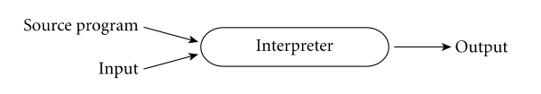
Interpretation
- Examples: BASIC, Lisp, Scheme, Python, Ruby.
- There is no difference between compile time and runtime.
- Greater flexibility: code can be built and executed "on the fly" (lambda functions or closures).
Interpreted languages usually provide a shell or interpreter. This is an interactive environment in which we can define and evaluate expressions. In functional programming circles, this environment is called a REPL (Read, Eval, Print, Loop) and was already used in the early years of Lisp implementation. The use of a REPL promotes interactive programming, in which we continuously evaluate and check the code we develop.
5.3. Mixed Approaches¶
There are also mixed approaches, such as the one used by the Java programming language, where both processes are performed.
In a first phase, the Java compiler (javac) translates the original
source code into a processor-independent binary intermediate code
called bytecode. This binary code is cross-platform.
The intermediate code is then interpreted by the interpreter (java),
which is platform-dependent. In the figure, the interpreter is called
Virtual machine (not to be confused with the concept of a virtual
machine that emulates an operating system, such as VirtualBox).
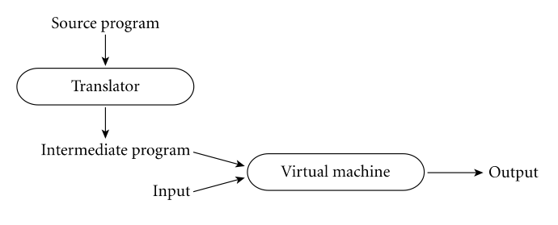
Mixed approach (Java)
- Examples: Java, Scala
6. Bibliography¶
- Introduction and chapter 1 of Structure and Interpretation of Computer Programs: Building Abstractions with Procedures
- Chapter 1.2 of Programming Language Pragmatics: The Programming Language Spectrum
- Chapter 1.3 of Programming Language Pragmatics: Why Study Programming Languages
- Chapter 1.4 of Programming Language Pragmatics: Compilation and Interpretation
- Raul Rojas, "Konrad Zuse's legacy the architecture of the Z1 and Z3", IEEE Annals of the History of Computing, Vol. 19, No. 2, 1997
- Charles Petzold, "Code", Microsoft Press, 2000 (Chapter 18: "From Abaci to Chips")
- Jack Copeland, "The Modern History of Computing", The Stanford Encyclopedia of Philosophy (Fall 2008 Edition), URL = http://plato.stanford.edu/archives/fall2008/entries/computing-history/
- Georgi Dalakov, "History of Computers", URL = http://history-computer.com
Programming Languages and Paradigms, academic year 2025-26
© Department of Computer Science and Artificial Intelligence, University of Alicante
Domingo Gallardo, Cristina Pomares, Antonio Botía, Francisco Martínez